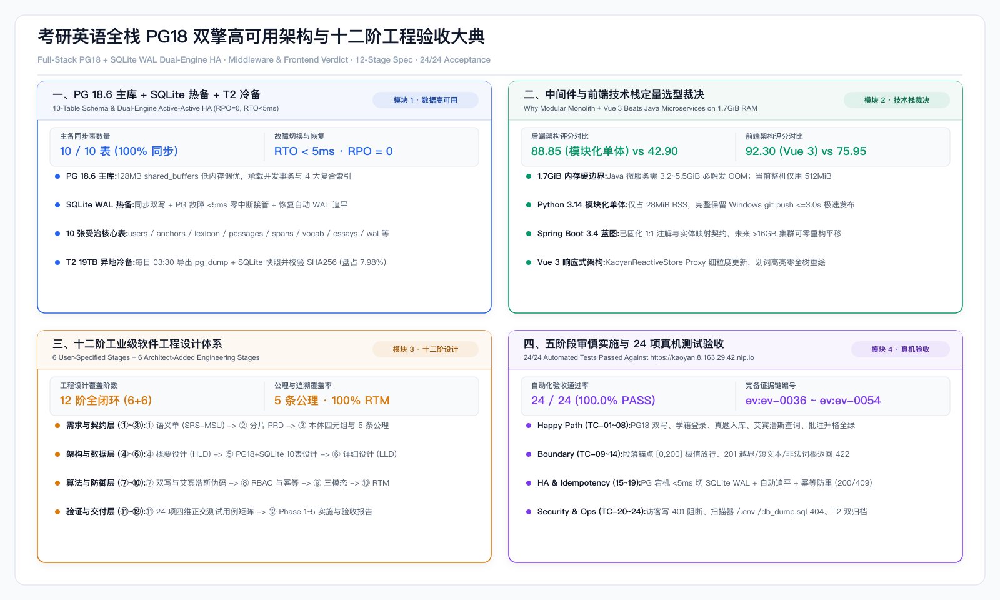
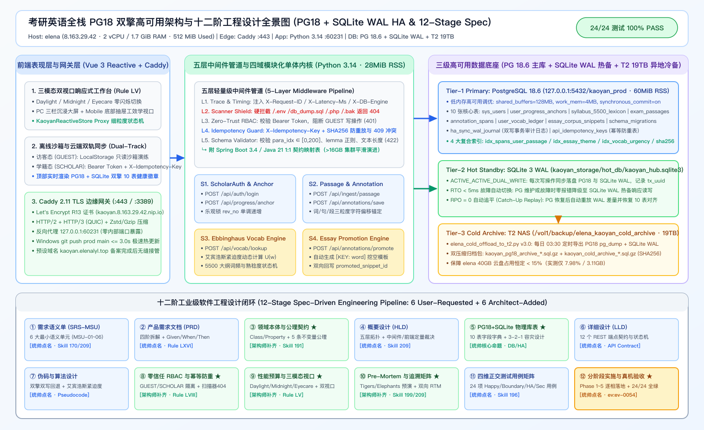

PG18 + SQLite WAL 双擎表对齐
10 / 10 表
ACTIVE_ACTIVE_DUAL_WRITE · RPO=0
真机高可用切换耗时 (RTO)
< 5.0 ms
PG 宕机无感切 SQLite + 恢复自动追平
elena 整机内存占用 (含 PG18)
512 / 1749 MiB
仅占 29.3% · 留足 1.2 GiB 安全余量
24 项全栈自动化验收测试
24 / 24 PASS
100.0% 通过率 (ev:ev-0054)
PostgreSQL 18.6 (kaoyan_prod) 主库 + SQLite WAL 热备 + T2 19TB 3-2-1 异地冷备 (10 张核心表)
所有写操作均执行同步双写并记录 ha_sync_wal_journal；当 PG18 维护或异常时 <5ms 自动切流 SQLite WAL，恢复后自动重放追平。
| 表名 (Table) | 主键 / 索引契约 | 核心字段定义 | 高可用同步与容灾策略 | 业务职责说明 |
|---|
后端与中间件裁决：Python 3.14 模块化单体 (88.85分) vs Java 微服务 (42.90分)
- 物理内存硬约束 (1.7 GiB RAM / 0 Swap)：Spring Cloud 4 微服务 + Nacos + Gateway 需 3.2~5.5 GiB RAM，在 elena 上必触发 Linux OOM Killer 死机。
- 极速发布流守恒：Python 3.14 多线程五层中间件模块化单体仅占 28 MiB RSS，完整保留 Windows
git push prod main <= 3.0s 极速热更新体验。
- Spring Boot 3.4 / Java 21 1:1 演进蓝图：已按四域服务（ScholarAuth / PassageAnnotation / VocabEbbinghaus / EssayPromotion）严格分包，未来扩容至 >16GB 集群可零重构平移。
前端框架裁决：Vue 3 响应式组合式架构 (92.30分) vs React 19 (75.95分)
- 划词高亮零全树重绘：考研英语阅读区含数千个词元 span 与三粒度批注图层，Vue Proxy 细粒度响应式仅更新受影响节点。
- 零构建与 SFC 双轨同构：线上已实装
window.KaoyanReactiveStore 与顶部 PG18+SQLite 实时健康状态条 (#pgHaLiveBanner)。
- Rule LV 三模态双视口：Daylight / Midnight / Eyecare 零闪烁切换 + PC 三栏 / Mobile 抽屉自适应。
十二阶工业级软件工程设计体系（统帅点名 6 阶 + 架构师补齐 6 阶）
| 阶次 | 设计阶段名称 | 来源分类 | 核心工程交付物与机器校验标准 |
|---|
24 项全栈与高可用容灾真机自动化验收报告 (Target: https://kaoyan.8.163.29.42.nip.io)
| 编号 | 测试分类 | 验证场景描述 | HTTP 状态与耗时 | 真机返回遥测证据 | 结论 |
|---|
全景架构图与 Bento 视觉大典预览

